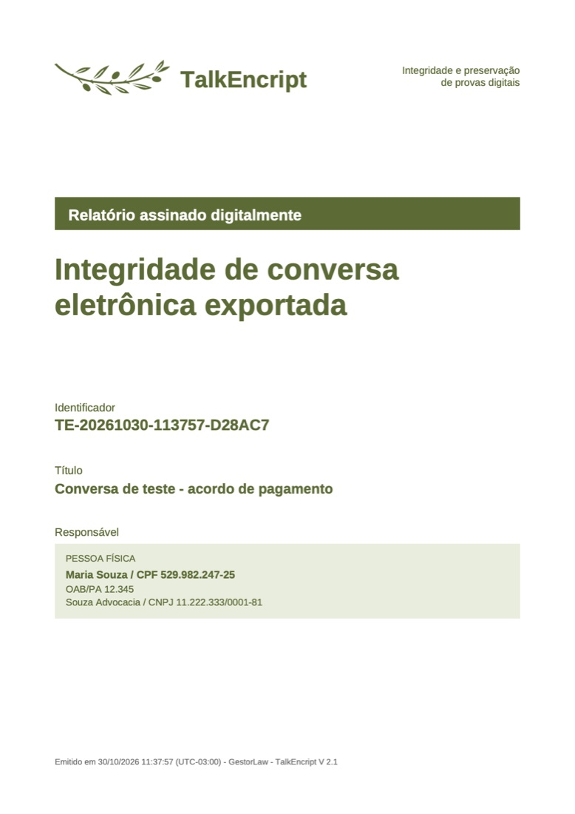
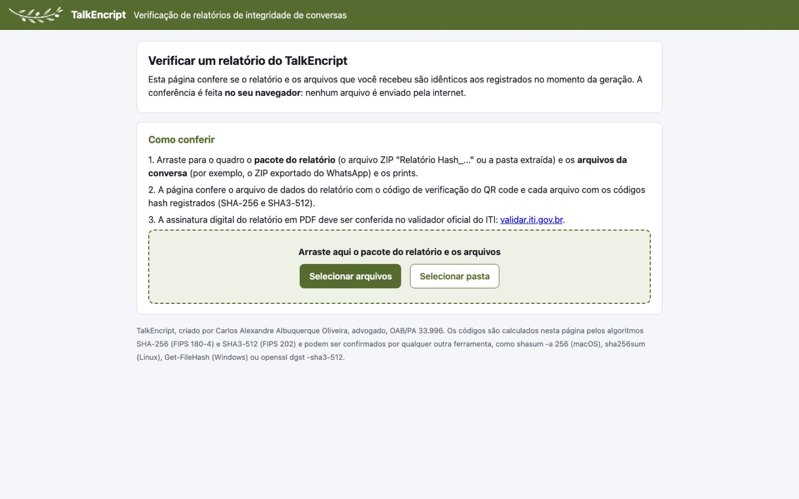

Aplicativo no navegador
TalkEncript
Relatório de integridade de conversas exportadas, com hash e cadeia de custódia — prova digital pronta para os autos.
O gerador de relatórios é distribuído sob solicitação; a verificação de relatórios é pública.
SituaçãoDisponível
Versão2.1.0
PlataformasWindows, Mac, Linux e Chromebook (navegador); instalador para Mac
PreçoSob consulta
O que faz
Recursos principais
- Calcula SHA-256, SHA-512 e SHA3-512 de cada arquivo da conversa exportada (WhatsApp, Telegram e outros), de cada item dos ZIPs e de cada print.
- Compara os prints com a conversa exportada e mostra a linha encontrada.
- Registra a cadeia de custódia: operador, data e hora (local e UTC), local e ambiente de geração.
- Gera um pacote com Relatório em PDF, Conversa integral, Prints, dados em JSON e manifestos de verificação.
- Assinatura opcional do PDF com certificado A1 (PAdES) e QR code para o validador on-line.
- Os arquivos nunca saem do computador.
TelasCapa do relatório (dados fictícios) · toque para ampliar Página pública de verificação de relatórios · toque para ampliar
Como é o TalkEncript




Manual
Como instalar e começar
- Mac: dê dois cliques em
TalkEncript-Instalador-macOS.pkg(Continuar, Instalar, Fechar). - Windows, Mac ou Linux sem instalar: extraia o pacote e dê dois cliques em
TalkEncript.html. - Permita a localização, preencha o cadastro do operador e, em Gerar relatório, envie a conversa exportada.
- Quem recebe o relatório confere tudo na página Verificar, sem enviar nada a servidor.
Fundamentação
CPP, arts. 158-A a 158-F; ABNT NBR ISO/IEC 27037; jurisprudência do STJ.
Verificação
No navegador (página pública), pelo pacote ou pelo terminal (shasum, sha256sum, Get-FileHash, openssl).
Assinatura
Com certificado A1; confira em validar.iti.gov.br.
Importante: O relatório é técnico; a admissibilidade da prova é decidida pelo juízo.
Dúvidas na primeira abertura? Veja as orientações gerais.